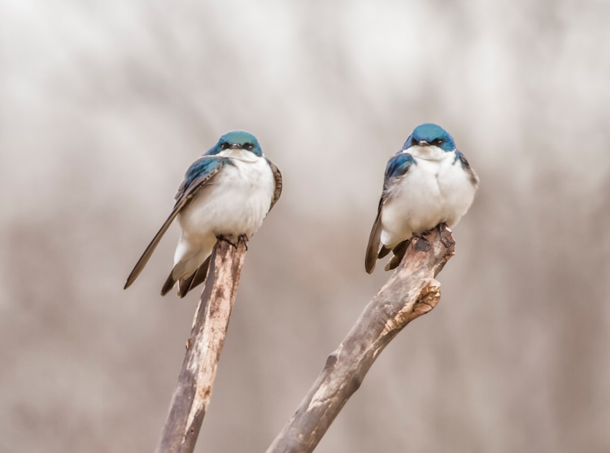
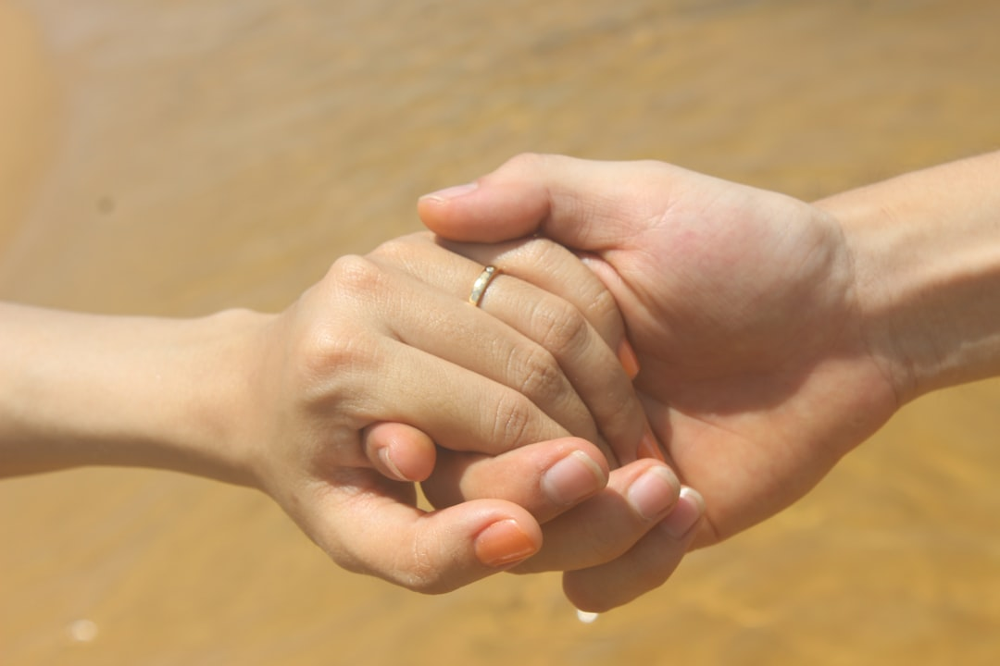

The Unrequited Love of a Bird: A Cautionary Tale of Faithfulness and Communication
In a poignant and thought-provoking story, a bird's declaration of love to another bird takes an unexpected turn, leading to a tragic conclusion. The tale serves as a powerful reminder of the importance of faithfulness, communication, and empathy in relationships.

Introduction to the Story
The story begins with a bird expressing its deep love and affection to another bird. However, the recipient of this affection responds with a mix of surprise and skepticism, questioning the bird's commitment to their relationship. The bird, overcome with emotion, makes a drastic decision to prove its devotion by cutting off its own wings, rendering it unable to fly away.
This act of self-sacrifice is a testament to the bird's unwavering dedication to its loved one. Nevertheless, when a storm approaches, the bird with intact wings advises the wingless bird to remain calm, assuring it that it will fly away to safety. The wingless bird, now helpless and grounded, is left to face the storm alone.

The Storm and Its Aftermath
As fate would have it, the storm that was anticipated never actually arrives. However, the damage has already been done. The bird that flew away returns to find its loved one deceased, with a heartbreaking note that reads: 'If only you had asked me what would happen to me before you left, I would not have died before the storm.'
This note serves as a stark reminder of the importance of communication and empathy in relationships. The bird that flew away, although it may have acted out of self-preservation, failed to consider the well-being and safety of its partner. This lack of consideration ultimately led to the tragic demise of the wingless bird.
Lessons Learned from the Story
The story of the two birds offers several valuable lessons that can be applied to human relationships. Firstly, it highlights the importance of faithfulness and commitment. The bird that cut off its wings demonstrated an unwavering dedication to its partner, whereas the bird that flew away showed a lack of commitment and empathy.
Secondly, the story emphasizes the need for effective communication in relationships. If the bird that flew away had taken the time to ask about its partner's well-being before leaving, the tragic outcome could have been avoided.
Lastly, the tale serves as a reminder that our actions, or lack thereof, can have severe consequences. The bird that flew away may have thought it was acting in its own best interest, but its actions ultimately led to the demise of its loved one.

Practical Applications of the Story's Lessons
So, how can we apply the lessons from this story to our own lives and relationships? Here are a few practical tips:
- Practice empathy and consider the feelings of others: Before making decisions that may affect those around us, take the time to consider their perspectives and feelings.
- Communicate effectively: Make an effort to ask questions and seek feedback from others, especially in situations where their well-being may be at risk.
- Demonstrate faithfulness and commitment: Show up for those who matter most in our lives, and be willing to make sacrifices for their benefit.
By incorporating these principles into our daily lives, we can build stronger, more resilient relationships that are better equipped to withstand life's challenges.
Conclusion
The story of the two birds serves as a powerful reminder of the importance of faithfulness, communication, and empathy in relationships. As we reflect on the tale's lessons, we are encouraged to examine our own relationships and consider how we can apply these principles to build stronger, more meaningful connections with others.
In the end, the story of the bird that cut off its wings in a gesture of love and devotion serves as a cautionary tale about the importance of considering the well-being of those we care about. By prioritizing empathy, communication, and faithfulness, we can create relationships that are truly fulfilling and lasting.
The greatest happiness of life is the conviction that we are loved; loved for ourselves, or rather, loved in spite of ourselves.
As we move forward in our own relationships, let us strive to create a sense of safety, trust, and mutual respect. By doing so, we can build a foundation for love and connection that will endure even the most challenging of storms.